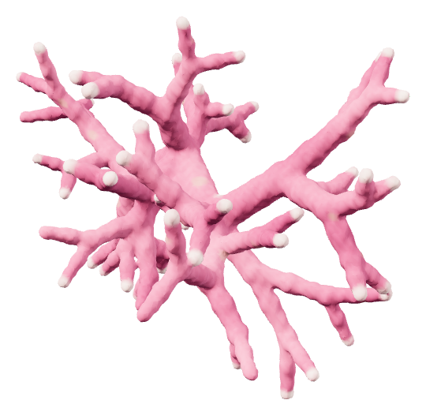

EXPLORACIÓN INTERACTIVA
Rodolitos
Una mirada a sus ramas y a los entramados que forman en el fondo marino.

Una mirada a sus ramas y a los entramados que forman en el fondo marino.


Arrastrá para girar · Pellizcá o usá + / − para acercarte